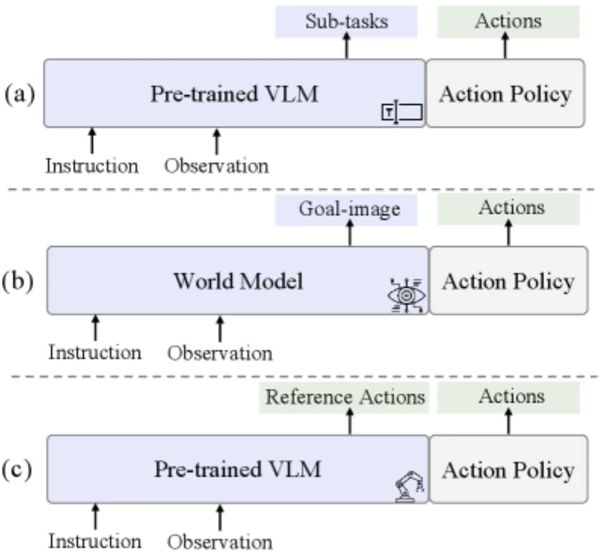
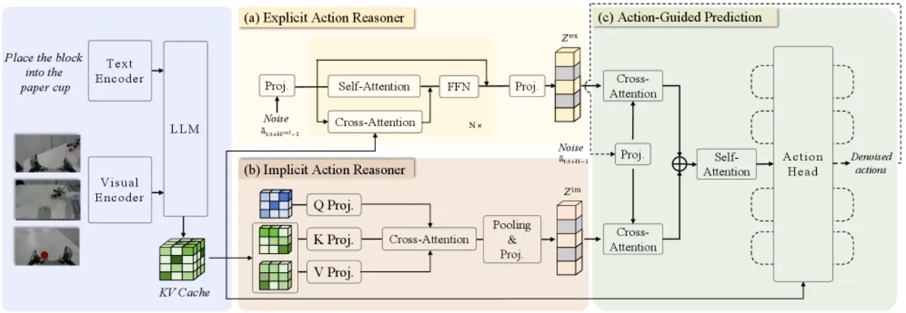
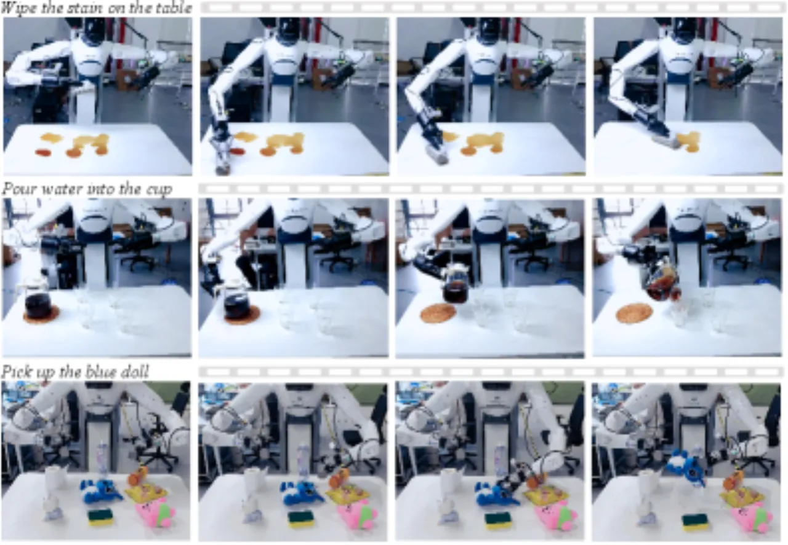
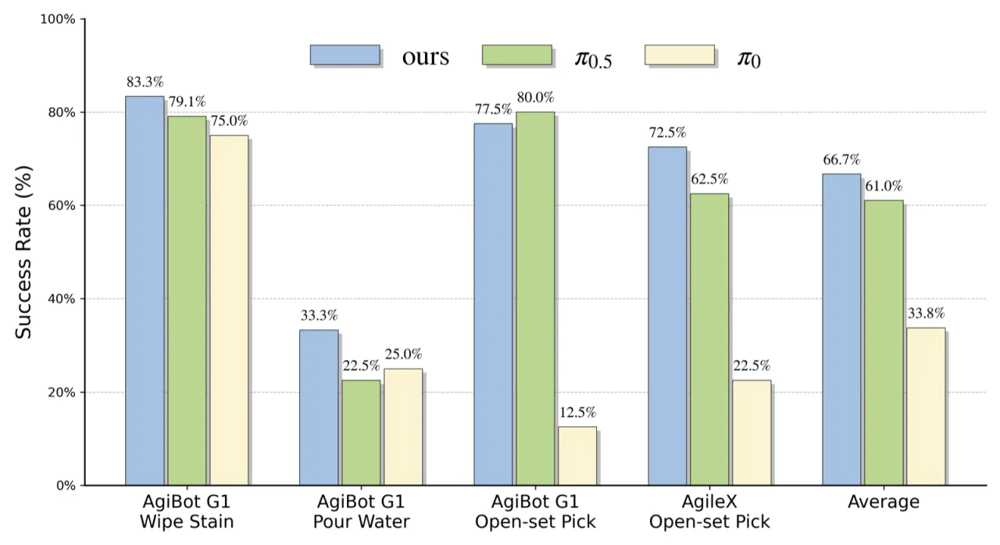

ACoT-VLA 提出了一种全新的 Action Chain-of-Thought（ACoT）范式：不同于已有方法在语言空间或视觉空间中进行中间推理，ACoT 直接在动作空间中构建"粗粒度动作意图序列"，为最终策略提供同质化的运动先验。架构由 Explicit Action Reasoner（显式参考轨迹合成）和 Implicit Action Reasoner（隐式动作先验提取）两部分组成，协同引导最终的 Action-Guided Prediction 解码，在仿真与真实机器人实验中均取得最先进性能。
现有 VLA 模型从互联网规模的语义数据中获取了丰富知识，但缺乏对物理动力学的理解。语言 CoT 和视觉 CoT 两种主流中间推理范式，均因"语义-运动异质性（semantic-kinematic gap）"而难以为精确执行提供有效引导。
"Language CoT predicts sub-tasks as intermediate reasoning. Visual CoT synthesizes a goal image to provide guidance for action policy. Our proposed Action CoT directly operates in action space and provides homogeneous action guidance."

ACoT-VLA 以预训练 VLM（Gemma 2B + SigLIP）为骨干，在其特征之上并联两个推理器，最终由 Action-Guided Prediction（AGP）head 融合两路引导，通过扩散去噪输出可执行动作序列。

EAR 是一个轻量 Transformer 模块，输入含噪动作序列，通过 self-attention 建模序列内部关系，再通过与 VLM 特征的 cross-attention 注入视觉语言上下文，输出粗粒度参考轨迹作为显式运动引导。EAR 的监督信号来自于 ground-truth 动作的加噪版本，损失权重 λ₁ = 0.5。
IAR 使用一组可学习 query，通过 cross-attention 对 VLM 各层内部表征进行聚合，提炼与动作相关的隐式先验。为抑制噪声，IAR 对 key-value 对进行下采样。提取到的隐式先验与 EAR 的显式轨迹共同输入 AGP head，起到互补的增益效果，损失权重 λ₂ = 0.5。
在 LIBERO、LIBERO-Plus（零样本迁移）、VLABench 三个仿真 benchmark 以及 AgiBot G1 真实机器人平台上进行全面评测，与 40+ 条 baseline 进行对比，包括 Diffusion Policy、OpenVLA、π0、π0.5、WorldVLA、DreamVLA 等。
| 方法 | Spatial | Object | Goal | Long | 平均 |
|---|---|---|---|---|---|
| π0.5 | — | — | — | — | 96.9% |
| MemoryVLA | — | — | — | — | 96.7% |
| DD-VLA | — | — | — | — | 96.3% |
| ACoT-VLA（本文） | 99.4% | 99.6% | 98.8% | 96.0% | 98.5% |
| 方法 | 平均 SR | 机器人扰动 | 语言变体 |
|---|---|---|---|
| π0-FAST | 61.6% | — | — |
| π0.5 | 85.7% | — | — |
| ACoT-VLA（本文） | 86.6% | +3.2% | +4.2% |
| 方法 | Intention Score (IS) | Progress Score (PS) |
|---|---|---|
| π0.5 | 60.2% | 43.1% |
| ACoT-VLA（本文） | 63.5% | 47.4% |
在 unseen-texture track 上，Intention Score 提升 +12.6%，Progress Score 提升 +7.2%，体现出对未见纹理分布的更强泛化。


在 LIBERO benchmark 上逐步加入各组件的消融分析：
| 配置 | LIBERO 平均 SR | Δ vs baseline |
|---|---|---|
| π0.5（baseline） | 96.9% | — |
| + EAR only | 98.3% | +1.4% |
| + IAR only | 98.1% | +1.2% |
| + EAR + IAR（完整 ACoT-VLA） | 98.5% | +1.6% |
EAR 和 IAR 各自均带来显著提升，两者组合呈现协同增益（synergistic benefits），说明显式轨迹引导与隐式行为先验具有互补性。
EAR 生成的参考轨迹为"粗粒度（coarse-grained）"意图，在高精度、高速度操作任务中可能不足以覆盖所有运动细节。作者明确表示未来工作将探索更精细的动作空间表征。
训练使用单节点 8× NVIDIA H100 GPU，双路推理器（EAR + IAR）与 VLM 骨干同时前向传播，相比单一 baseline（π0.5）推理开销更高，对资源受限平台的部署存在挑战。
真实世界实验仅在 AgiBot G1 和 AgileX 两款平台上进行验证，跨具身（cross-embodiment）泛化能力尚未在更多机器人类型上得到充分证明；作者将扩展至更大规模跨实体场景列为未来方向之一。
当前骨干为 Gemma 2B，作者指出"探索更大模型容量（scaling to larger model capacities）"是重要的后续方向，现有结论对更大规模 VLM 的有效性尚未验证。